library(sf, quietly = TRUE)
library(ggplot2, quietly = TRUE)
library(tmap, quietly = TRUE)
library(dplyr, quietly = TRUE)
library(ggpubr, quietly = TRUE)
library(mgcv, quietly = TRUE)
library(spdep, quietly = TRUE)
library(collapse, quietly = TRUE)
library(gratia, quietly = TRUE)
# Chargement des données
data_airbnb <- readRDS('data/airbnb.rds')
data_airbnb$super_hote <- ifelse(data_airbnb$host_is_superhost == 't', 'YES', 'NO')
data_airbnb$prive <- factor(data_airbnb$private, levels = c('Chambre', 'Entier'))
data_airbnb$stationnement_gratuit <- factor(data_airbnb$Free_street_parking, levels = c('NO', 'YES'))
data_airbnb$jardin_ou_cours <- factor(data_airbnb$Garden_or_backyard, levels = c('NO', 'YES'))
data_airbnb$super_hote <- factor(data_airbnb$super_hote, levels = c('NO', 'YES'))
data_airbnb$metro_500m <- factor(data_airbnb$has_metro_500m, levels = c('NO', 'YES'))
# nous regarderons l'impact de 10 review supplementaires
data_airbnb$number_of_reviews <- data_airbnb$number_of_reviews / 10
model_data <- data_airbnb %>%
dplyr::select(any_of(c('price','private','stationnement_gratuit', 'jardin_ou_cours',
'bedrooms', 'super_hote',
'number_of_reviews','review_scores_rating','metro_500m',
'prt_veg_500m'))) %>%
filter(complete.cases(st_drop_geometry(.)))
model_data$log_price <- log(model_data$price)
XY <- st_coordinates(model_data)
model_data$X <- XY[,1]
model_data$Y <- XY[,2]
# modèle non spatial
model1 <- gam(log_price ~ private + bedrooms +
stationnement_gratuit + jardin_ou_cours +
number_of_reviews + review_scores_rating + super_hote +
prt_veg_500m + metro_500m,
data = model_data, method = 'REML',
family = scat)
# modèle intégrant uniquement un intercept variant spatialement
model2 <- gam(log_price ~ private + bedrooms +
stationnement_gratuit + jardin_ou_cours +
number_of_reviews + review_scores_rating + super_hote +
prt_veg_500m + metro_500m +
s(X,Y, bs = 'gp'),
data = model_data, method = 'REML',
family = scat)10 Modèles GAM et GLMM avec des coefficients variant spatialement (en cours de rédaction)
Dans le chapitre précédent, nous avons présenté la GWR. Cette méthode permet notamment d’explorer comment les relations d’un modèle de régression varient spatialement. Contrairement aux autres modèles abordés jusqu’ici, la GWR permet de répondre à la question de l’hétérogénéité spatiale plutôt que de la dépendance spatiale.
Cependant, la GWR fait l’objet de critiques variées. En effet, bien qu’elle soit une technique puissante d’exploration de données, elle souffre de plusieurs défauts d’un point de vue statistique qui limitent grandement son usage pour faire des analyses inférentielles.
Avec le développement des logiciels et packages pour travailler avec des modèles complexes et notamment les modèles à effets mixtes, de nouvelles pistes ont été développées pour intégrer la question de l’hétérogénéité spatiale dans les modèles. Nous allons aborder ici comment les modèles GAM et GLMM peuvent être utilisés pour autoriser des coefficients à varier spatialement tout en évitant les limites spécifiques de la GWR. Ces modèles peuvent être regroupés sous le terme de modèles à coefficients variant spatilament, soit spatially varying coefficients models ou SVCM.
Le principal avantage des modèles SVCM sur la GWR est qu’ils permettent de modéliser directement l’hétérogénéité spatiale dans un seul modèle. En effet, une GWR est en réalisé une collection de modèles locaux, alors qu’un SVCM est un simple modèle. Dans un SVCM, il n’y a pas besoin de sélectionner de bandwidth et les conditions d’applications des modèles de régression sont (plus) faciles à effectuer.
10.1 Hétérogénéité spatiale et modèles généralisés additifs (GAM)
Dans cette section, nous expliquons comment les splines que nous avions utilisées pour intégrer l’espace dans un modèle GAM peuvent être utilisées pour faire varier spatialement l’effet de certains coefficients.
10.1.1 Splines et coefficients variant spatialement
Nous avions vu dans le chapitre Chapitre 6 que les modèles GAM permettaient de prendre en compte l’espace dans un modèle en intégrant une fonction non linéaire appelée spline. Cette fonction non linéaire venait capturer l’effet des coordonnées spatiales (spline bivariée) ou de la matrice de voisinage (Markov Random Field). La complexité de cette fonction dépendait du nombre de noeuds (k) qui lui était était accordé et d’un paramètre de lissage déterminé le plus souvent comme une pénalisation similaire à un effet aléatoire. Ces splines spatiales permettent notamment de capturer des structures spatiales lisses et caractérisée par une importante autocorrélation spatiale.
Un modèle GAM intégrant uniquement une spline spatiale est donc formulé de la façon suivante :
\[ \begin{aligned} &y \sim D(\mu,\theta)\\ &g(\mu) = \beta_0 + \beta X + f(sp)\\ \end{aligned} \tag{10.1}\]
avec :
- \(y\), la variable dépendante.
- \(D\), une distribution avec une espérance \(\mu\) et ses autres paramètres \(\theta\).
- \(X\), les variables indépendantes dont l’effet est supposé linéaire par le modèle.
- \(\beta\), les coefficients des variables indépendantes.
- \(\beta_0\), la constante.
- \(\zeta\), les variables dont l’effet est supposé non linéaire par le modèle.
- \(f\), une fonction modélisant l’impact de l’espace.
- \(sp\), une matrice de coordonnées cartésiennes ou une matrice de contiguité spatiale.
La spline \(f(sp)\) permet d’augmenter ou de réduire spatialement la valeur prédite pour l’espérance de \(y\). Elle peut être vue comme une forme de bonus ou de malus local accordé à l’intercept. Pour étendre cet usage au cas des coefficients variant spatialement, il est possible de construire une spline similaire, mais qui est multipliée par la variable indépendante dont le coefficient doit varier spatialement. Cette formulation suppose donc que ce la variation spatiale du coefficient doit suivre une tendance lisse.
Le modèle peut donc être modifié de la façon suivante :
\[ \begin{aligned} &y \sim D(\mu,\theta)\\ &g(\mu) = \beta_0 + \beta X + \sum^{n}_{j=1}(f_j(sp)\times\zeta_j) + f(sp)\\ \end{aligned} \tag{10.2}\]
avec :
- \(\zeta_j\), une variable indépendante variant spatialement.
Ce modèle permet de choisir quelles variables dépendantes doivent avoir des effets variant dans l’espace. Notez cependant que chaque spline ajoutée ainsi augmente significativement la complexité du modèle, soit le nombre de paramètres à estimer. Il est préférable de choisir ces variables pour répondre à une question de recherche précise, ou encore si le cadre théorique le justifie. Il est bien sûr possible de comparer l’ajustement de plusieurs modèles imbriqués pour vérifier si l’ajout d’un coefficient variant spatialement complexifie le modèle de façon justifiée. Pour cela la comparaison des AIC ou ou un test de rapport de vraissemblance peuvent être utilisés. Notez que le test de rapport de vraisemblance basé sur la distribution du \(\chi^2\) n’est pas très adapté à ce type de modèle. Une alternative est la version non paramétrique par boostrap, mais elle est très intensive en temps de calcul.
Enjeux de concurvité
Notez qu’il n’est pas obligatoire de conserver la première spline faisant varier l’intercept dans le modèle. Il est tout à fait possible qu’elle devienne inutile après avoir autorisé certains coefficient à varier spatialement. En effet, il est possible que les différentes splines spatiales d’un modèle se superposent et posent alors un problème de concurvité. La concurvité est l’équivalent de la multicolinéarité mais pour les fonctions lisses estimées par les splines. Si deux termes non linéaires ont une forte concurvité, cela signifie que l’un des deux termes peut englober l’autre. Ce type de problème est trés fréquent lorsque l’on essaye de modéliser des coefficients variant spatialement avec des splines.
Bien que n’importe quel type de spline peut être utilisé, les gaussian process (bs = 'gp') sont généralement privilégiés car ils sont typiquement utilisés dans d’autres modèles spatiaux, notamment les GLMM. En effet, rappelons brièvement qu’une spline est mathématiquement équivalente à un effet aléatoire Wood (2017). Dis plus simplement, les GAM sont en réalité des GLMM.
Il est important ici de distinguer deux tests de significativité à effectuer sur les splines d’un modèle GAM.
Le premier test (typiquement obtenu avec la fonction
summarydemgcv) permet de déterminer si l’effet général de la spline est différent de zéro. D’un point de vue pratique, il est comparable au test appliqué aux coefficients classiques d’un modèle linéaire permettant de déterminer s’il sont significativement différents de zéro ou non.Le second test consiste à vérifier si les différentes valeurs de la spline sont significativement différentes de zéro. En effet, une spline utilisée pour obtenir des coefficients variant spatialement peut produire des coefficients qui ne sont pas significativement différents de zéro partout. Ce deuxième test est généralement réalisé avec une approche par simulation, mais peut aussi être réalisé avec une approche par bootstrap. Cette deuxième approche est plus exacte, mais nécessite un temps de calcul beaucoup plus élevé. D’un point de vue pratique, ce test permet de déterminer où sur notre territoire notre variable indépendante est associée avec un coefficient significativement différent de zéro. Il est important d’effectuer ce test pour ne pas surinterpréter les résultats du modèle.
10.1.2 Mise en oeuvre dans R
Nous illustrons ici l’utilisation des splines pour faire varier spatialement les coefficients d’un modèle, avec l’exemple donné dans le chapitre sur les GLS. Pour rappel, nous modélisions le log du prix par nuit de logements Airbnb sur l’île de Montréal. Nous commençons par réajuster le modèle non spatial, le modèle GAM simple, plus nous essayons d’améliorer le modèle en faisant varier spatialement certains coefficients.
Nous construisons ici un troisième modèle dans lequel nous autorisons plusieurs coefficients à varier spatialement soit :
- le fait qu’un logement soit privé
- la présence d’une station de métro à moins de 500m
- la densité de la couverture végétale dans un rayon de 500m
Notez également que nous avons retiré l’intercept variant spatialement (s(X,Y, bs = 'gp', k = 50)). En effet, après plusieurs tests, il s’est avéré que cet effet spatial était capable de résumer à lui seul les effets des coefficients variant spatialement (phénomène de concurvité). Nous allons donc comparer le modèle 2 avec cet intercept spatial, et le modèle 3 privilégiant des coefficients variant spatialement.
# Pour les variables dichotomique, il est plus facile de les recoder comme
# des variables binaires pour ce type de modèle
model_data$private <- ifelse(
model_data$private == 'Entier', 1, 0
)
model_data$metro_500m <- ifelse(
model_data$metro_500m == 'YES', 1, 0
)
model_data$jardin_ou_cours <- ifelse(
model_data$jardin_ou_cours == 'YES', 1, 0
)
model_data$stationnement_gratuit <- ifelse(
model_data$stationnement_gratuit == 'YES', 1, 0
)
model_data$super_hote <- ifelse(
model_data$super_hote == 'YES', 1, 0
)
model3 <- gam(log_price ~ bedrooms +
stationnement_gratuit + jardin_ou_cours +
number_of_reviews + review_scores_rating + super_hote +
s(X,Y, bs = 'gp', k = 25, by = private) +
s(X,Y, bs = 'gp', k = 25, by = metro_500m) +
s(X,Y, bs = 'gp', k = 25, by = prt_veg_500m),
data = model_data, method = 'REML',
family = scat)
round(concurvity(model3),3) para s(X,Y):private s(X,Y):metro_500m s(X,Y):prt_veg_500m
worst 0.997 0.978 0.811 0.978
observed 0.997 0.739 0.677 0.800
estimate 0.997 0.619 0.559 0.516Le tableau des valeurs de concurvité indique pour chaque terme du modèle s’il peut être inclu dans un autre terme non-linéaire. Il s’agit d’une extension du concept de multicolinéarité aux termes non-linéaires. Les valeurs sont comprises entre 0 (absence de concurvité) et 1 (concurvité parfaite). Le terme para indique la partie paramétrique du modèle (les effets linéaires). Trois estimations de la concurvité sont données étant respectivement pessimiste (worst), optimiste observed et équilibrée (estimate). Dans notre cas, les valeurs de la ligne estimate pour les termes non-linéaires sont toutes relativement faibles, indiquant donc que ces derniers ne peuvent pas se substituer les uns aux autres. Notez ici que le package mgcv utilise une méthode d’estimation robuste qui est peu affectée par une concurvité modérée. Cependant, des valeurs supérieure à 0,8 devraient être considérées comme problématiques.
Nous pouvons comparer nos trois modèles en nous basant sur plusieurs mesures, soit le AIC, le REML et leurs R2.
comp_df <- AIC(model1, model2, model3)
comp_df$REML <- c(model1$gcv.ubre, model2$gcv.ubre, model3$gcv.ubre)
comp_df$R2 <- c(summary(model1)$r.sq,
summary(model2)$r.sq,
summary(model3)$r.sq)
knitr::kable(comp_df, row.names = TRUE, digits = 2)| df | AIC | REML | R2 | |
|---|---|---|---|---|
| model1 | 12.00 | 2732.44 | 1392.92 | 0.44 |
| model2 | 31.63 | 2610.63 | 1365.34 | 0.47 |
| model3 | 41.33 | 2638.35 | 1422.61 | 0.46 |
Les indicateurs précédents penchent tous en faveur du modèle 2 (moins de paramètres, meilleur AIC, REML et R2). Cependant, celui-ci nous donne un peu moins d’information sur la raison pour laquelle les prix des Airbnb varient dans l’espace. Il est donc intéressant de se pencher sur les informations que nous pouvons tirer du modèle 3.
Avant cela, nous devons bien sûr confirmer que le modèle respecte ses différentes conditions d’applications en validant la distribution de ses résidus.
model_data$residual_3 <- residuals(model3, type = 'scaled.pearson')
model_data$residual_2 <- residuals(model2, type = 'scaled.pearson')
model_data$residual_1 <- residuals(model1, type = 'scaled.pearson')
knn_list <- knearneigh(model_data, k = 10)
nb_list <- knn2nb(knn_list, sym = TRUE)
listw <- nb2listwdist(nb_list, model_data , style = 'W', type = 'idw', alpha = 2)
test3 <- moran.mc(model_data$residual_3, listw = listw, nsim = 999)
test2 <- moran.mc(model_data$residual_2, listw = listw, nsim = 999)
test1 <- moran.mc(model_data$residual_1, listw = listw, nsim = 999)
test0 <- moran.mc(model_data$log_price, listw = listw, nsim = 999)
tableau <- data.frame(
variable = c('residus3', 'residus2', 'residus1', 'log_price'),
I = c(test3$statistic, test2$statistic, test1$statistic, test0$statistic),
P = c(test3$p.value, test2$p.value, test1$p.value, test0$p.value)
)Le test du I de Moran sur les résidus n’indique pas de présence d’autocorrélation spatiale pour le modèle 3.
summary(model3)
Family: Scaled t(10.425,0.389)
Link function: identity
Formula:
log_price ~ bedrooms + stationnement_gratuit + jardin_ou_cours +
number_of_reviews + review_scores_rating + super_hote + s(X,
Y, bs = "gp", k = 25, by = private) + s(X, Y, bs = "gp",
k = 25, by = metro_500m) + s(X, Y, bs = "gp", k = 25, by = prt_veg_500m)
Parametric coefficients:
Estimate Std. Error z value Pr(>|z|)
(Intercept) 2.813430 0.168467 16.700 < 2e-16 ***
bedrooms 0.239156 0.011080 21.585 < 2e-16 ***
stationnement_gratuit 0.044686 0.019975 2.237 0.0253 *
jardin_ou_cours -0.018990 0.027892 -0.681 0.4960
number_of_reviews 0.001394 0.001924 0.724 0.4688
review_scores_rating 0.007420 0.001711 4.337 1.45e-05 ***
super_hote 0.036737 0.021893 1.678 0.0933 .
---
Signif. codes: 0 '***' 0.001 '**' 0.01 '*' 0.05 '.' 0.1 ' ' 1
Approximate significance of smooth terms:
edf Ref.df Chi.sq p-value
s(X,Y):private 6.415 8.073 995.14 < 2e-16 ***
s(X,Y):metro_500m 9.422 11.306 23.05 0.02175 *
s(X,Y):prt_veg_500m 11.939 14.677 36.27 0.00143 **
---
Signif. codes: 0 '***' 0.001 '**' 0.01 '*' 0.05 '.' 0.1 ' ' 1
R-sq.(adj) = 0.461 Deviance explained = 45.3%
-REML = 1422.6 Scale est. = 1 n = 2260Nous pouvons constater que nos trois splines ont des effets significativement différents de 0 (premier test). Nous pouvons utiliser la méthode des effets marginaux pour représenter leurs coefficients dans l’espace et valider leur significativité localement (second test). Le package mgcv facilite l’extraction de ces effets grâce à la fonction predict et la paramètre type = 'terms', qui va garder séparés les contributions des différentes composantes du modèle.
Notons que puisque nous modélisons le log du prix des logements, nous devons transformer les coefficients avec la fonction expontielle pour pouvoir les interpréter dans l’échelle originale ($). Cependant, leur effet sera multiplicatif plutôt qu’additif.
library(terra)
library(gratia)
library(matrixStats)
# création d'un masque pour ne représenter l'effet des splines que dans les
# secteurs dans lesquels nous avons des données
mask_data <- st_read('data/chap10/ILE_MTL.shp', quiet = TRUE) %>%
st_transform(st_crs(data_airbnb)) %>%
st_intersection(st_buffer(data_airbnb, 1500)) %>%
st_union() %>%
vect()
# préparation d'un ensemble de points de prédictions formant une grille
# régulière de quadra de 1000m de coté
bbox <- as.list(st_bbox(st_buffer(data_airbnb,1000)))
coords <- expand.grid(
X = seq(bbox$xmin, bbox$xmax, 200),
Y = seq(bbox$ymin, bbox$ymax, 200)
)
# complétion du dataframe de prédiction
pred_df <- coords
pred_df$private <- 1
pred_df$bedrooms <- 0
pred_df$stationnement_gratuit <- 0
pred_df$jardin_ou_cours <- 0
pred_df$number_of_reviews <- 0
pred_df$review_scores_rating <- 0
pred_df$super_hote <- 0
pred_df$prt_veg_500m <- 25
pred_df$metro_500m <- 1
# prédiction à partir du modèle
preds <- predict(model3, newdata = pred_df, type = 'terms')
preds <- data.frame(preds)
pred_df <- cbind(pred_df, preds)
# convertion des coefficients en exponentielle pour avoir les effets sur
# l'échelle originale des données
pred_df$coeff_private <- exp(pred_df$s.X.Y..private)
pred_df$coeff_prt_veg_500m <- exp(pred_df$s.X.Y..prt_veg_500m)
pred_df$coeff_metro_500m <- exp(pred_df$s.X.Y..metro_500m)
# conversion des prédictions en objets raster pour la cartographie
vars <- c(c("X", "Y","coeff_private", "coeff_prt_veg_500m","coeff_metro_500m"))
data_rast <- as.matrix(pred_df[, vars])
raster_private <- rast(data_rast[,c(1,2,3)],type = 'xyz')
crs(raster_private) <- crs(data_airbnb)
raster_veg <- rast(data_rast[,c(1,2,4)],type = 'xyz')
crs(raster_veg) <- crs(data_airbnb)
raster_metro <- rast(data_rast[,c(1,2,5)],type = 'xyz')
crs(raster_metro) <- crs(data_airbnb)
# chargement des lignes de métro pour la cartographie
metro <- st_read('data/chap10/stm_lignes_sig.shp',quiet = TRUE) %>%
st_transform(st_crs(data_airbnb)) %>%
filter(grepl('Ligne',route_name, fixed = T)) %>%
mutate(route_name = gsub(".*- ", "", route_name))
metro_colors <- c('Verte' = '#008E4F',
'Orange' = '#EF8122',
'Jaune' = '#FFE300',
'Bleue' = '#0083C9'
)
tm_shape(mask(raster_private,mask_data)) +
tm_raster(palette = 'RdBu',
breaks = c(1,1.15,1.30,1.50,1.70,1.80,1.9,2.05),
midpoint = 1,
title = 'coefficient logement privé (exp)') +
tm_shape(data_airbnb) +
tm_dots()
tm_shape(mask(raster_veg,mask_data)) +
tm_raster(palette = 'RdBu',
midpoint = 1,
breaks = c(0.8,0.9,0.95,1,1.05, 1.1, 1.2),
title = 'coefficient couverture végétale (exp)') +
tm_shape(data_airbnb) +
tm_dots()
tm_shape(mask(raster_metro,mask_data)) +
tm_raster(palette = c('#B2182B', '#D6604D', '#FDDBC7', '#F7F7F7',
'#D1E5F0', '#92C5DE', '#4393C3', '#2166AC'),
breaks = c(0.7,0.8,0.9,1,1.15,1.30,1.5,2,6),
title = 'coefficient métro à 500m (exp)') +
tm_shape(metro) +
tm_lines('white',lwd = 8) +
tm_shape(metro) +
tm_lines('route_name',lwd = 4,
title.col = 'ligne de métro',
palette = metro_colors) +
tm_shape(data_airbnb) +
tm_dots()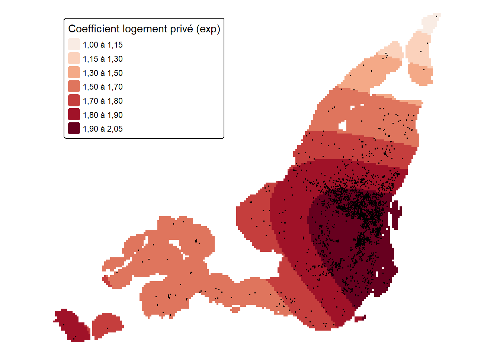
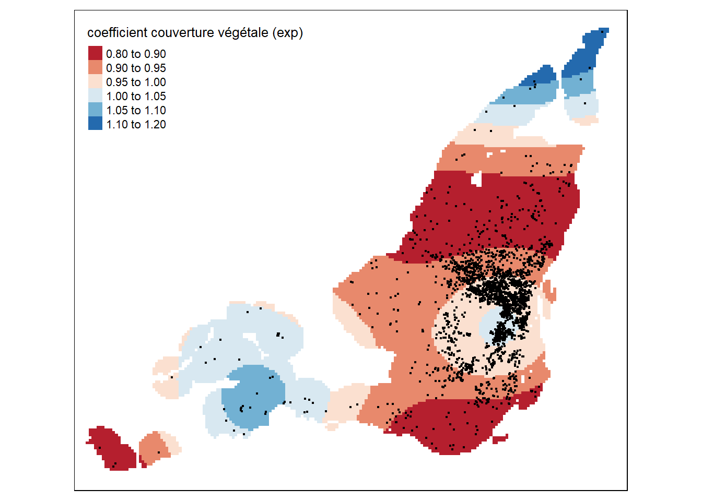
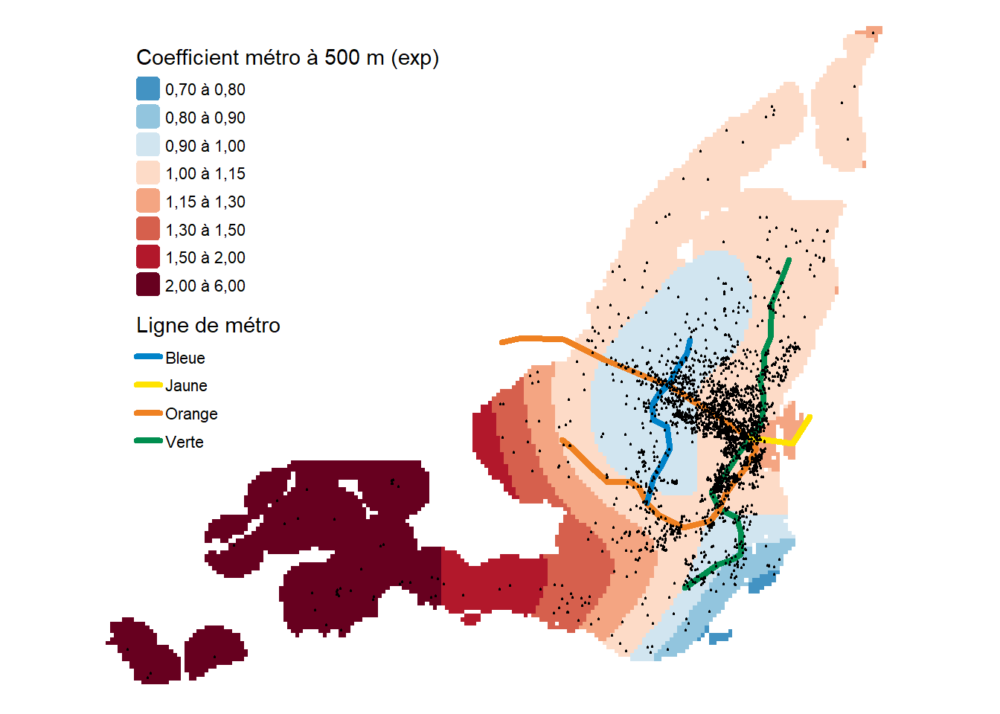
La figure ?fig-htgam1 illustre les trois splines ajustées à nos coefficients variant spatialement.
Pour le métro, Il est important de ne pas interpréter les valeurs en dehors de la zone dans laquelle nous avons effectivement des stations de métro. En effet, les splines ont tendance à mal interpoler les valeurs en dehors de l’étendue observée car elles se contentent de prolonger la tendance. Nous observons notamment que les prix des logements airbnb tendent à être plus petits le long de la ligne bleue, mais aussi le long de la portion Ouest de la ligne verte. Il s’agit d’une réduction relativement faible (< 10%). À proximité de la station Berry-UQAM, permettant la connexion entre les lignes orange, jaune et verte, nous pouvons observer des prix des Airbnbr légèrement plus élevés de 15% à 30% pour les Airbnb à moins de 500m d’une ligne de métro.
Une augmentation de 25 points de pourcentage de la densité végétale est associée avec des réductions de prix pouvant allant jusqu’à 20%. Ces réductions suivent généralement un gradiant en partant du Centre-Ville. Au Centre-Ville, proche du Mont-Royal, l’impact de la densité végétal est légèrement positif avec une augmentation des prix comprise entre 5% et 10%. Dans l’Ouest, dans l’arrondissement Pointe-Claire, l’impact du couvert végétal semble plus élevé encore. Cependant, nous disposons d’assez peu d’observations pour confirmer cette observation.
Le fait que le logement soit privé a toujours un impact positif le prix final du logement. Cependant, cet effet est bien supérieur au Centre-Ville et dans les quartiers centraux dans lesquels le prix des Airbnb est au moins doublé. Plus on s’éloigne du Centre-Ville, plus l’effet diminue, atteignant par exemple une augmentation de seulement 50% au niveau de l’arrondissement Montréal-Est.
Attention, cette interprétation se base uniquement sur les valeurs moyenne prédites des différents coefficients variant spatialement. Si la valeur de p d’une spline est significative pour le modèle général (premier test), cela ne veut pas dire qu’elle a une contribution significativement différentes de zéro sur l’ensemble de son domaine de définition (second test) .
Nous allons donc calculer ci-dessous des pseudo valeurs de p locales pour déterminer si les coefficients locaux sont significativement différents de zéro. Nous allons utiliser deux approches, la première est basée sur une approximation via une distribution normale. Elle est considérée valide lorsque le nombre d’observation est grand.
# Extraction des termes et de leur écart type
preds <- predict(model3, newdata = pred_df, type = 'terms', se = T )
fit <- data.frame(preds$fit)
se <- data.frame(preds$se.fit)
terms <- c('prt_veg_500m', 'private', 'metro_500m')
for(term in terms){
sterm <- paste0('s.X.Y..', term)
z <- (fit[[sterm]] / se[[sterm]])
pval <- 2 * (1 - pnorm(abs(z)))
pred_df[[paste0('sign_',term)]] <- pval
}
# conversion des prédictions en objets raster pour la cartographie
vars <- c(c("X", "Y","sign_private", "sign_metro_500m","sign_prt_veg_500m"))
data_rast <- as.matrix(pred_df[, vars])
raster_private <- rast(data_rast[,c(1,2,3)],type = 'xyz')
crs(raster_private) <- crs(data_airbnb)
raster_veg <- rast(data_rast[,c(1,2,5)],type = 'xyz')
crs(raster_veg) <- crs(data_airbnb)
raster_metro <- rast(data_rast[,c(1,2,4)],type = 'xyz')
crs(raster_metro) <- crs(data_airbnb)
colors <- rev(c('#F7F7F7','#D1E5F0', '#92C5DE', '#4393C3', '#2166AC'))
tm_shape(mask(raster_private,mask_data)) +
tm_raster(breaks = c(0,0.05,0.1,0.2,0.3,1),
palette = colors,
title = 'p-val (norm) \ncoefficient logement privé') +
tm_shape(data_airbnb) +
tm_dots()
tm_shape(mask(raster_veg,mask_data)) +
tm_raster(breaks = c(0,0.05,0.1,0.2,0.3,1),
palette = colors,
title = 'p-val (norm) \ncoefficient couverture végétale') +
tm_shape(data_airbnb) +
tm_dots()
tm_shape(mask(raster_metro,mask_data)) +
tm_raster(palette = colors,
breaks = c(0,0.05,0.1,0.2,0.3,1),
title = 'p-val (norm) \ncoefficient métro à 500m') +
tm_shape(metro) +
tm_lines('white',lwd = 8) +
tm_shape(metro) +
tm_lines('route_name',lwd = 4,
title.col = 'ligne de métro',
palette = metro_colors) +
tm_shape(data_airbnb) +
tm_dots()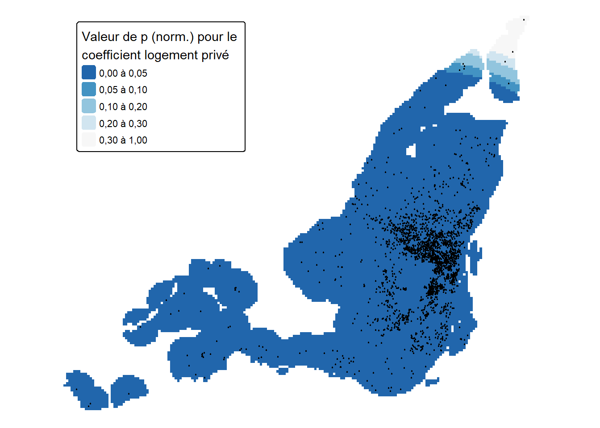
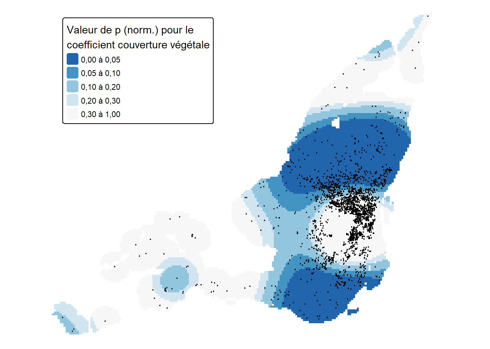
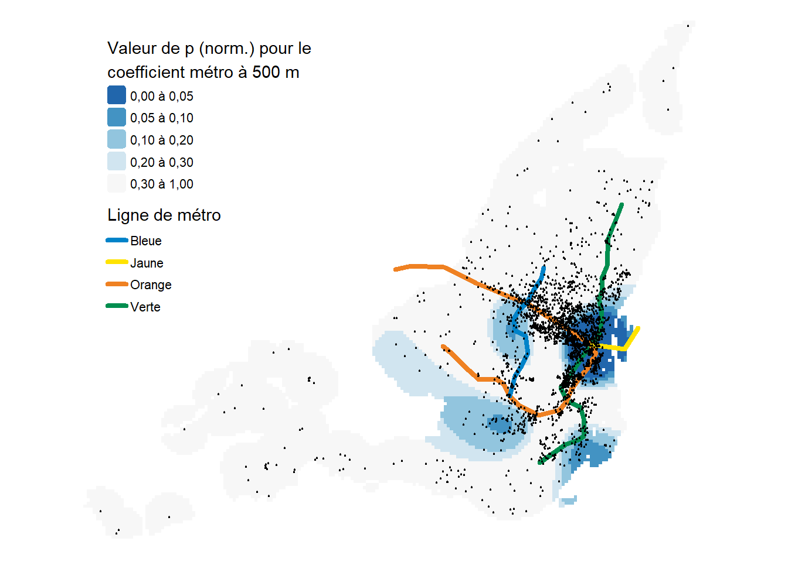
Pour confirmer nos observations ci-dessus, nous allons également calculer les valeurs de p avec une approche par simulation. Elle repose sur une approche Bayésienne consistant à échantilloner des valeurs des coefficicients à partir de leurs distributions postérieures.
# complétion du dataframe de prédiction
pred_df <- coords
pred_df$private <- 1
pred_df$bedrooms <- 0
pred_df$stationnement_gratuit <- 0
pred_df$jardin_ou_cours <- 0
pred_df$number_of_reviews <- 0
pred_df$review_scores_rating <- 0
pred_df$super_hote <- 0
pred_df$prt_veg_500m <- 25
pred_df$metro_500m <- 1
# extraction des échantillons des valeurs des distributions posterieures
# des effets non linéaires de notre modèle
# nous devons ensuite compter le nombre de fois ou les valeurs échantillonées
# étaient positives ou négatives au cours des simulations
df_sign <- pred_df %>%
add_smooth_samples(model3, n = 2500) %>%
fgroup_by(.row, .term) %>%
fsummarise(
p_inf0 = fsum(.value < 0) / fmax(.draw),
p_sup0 = fsum(.value > 0) / fmax(.draw)) %>%
fmutate(
pval = 1-(pmax(p_inf0, p_sup0))
) %>%
fmutate(
pval = ifelse(p_inf0 > p_sup0, pval * -1, pval)
) %>%
pivot(how = 'wider', values = c('pval'), ids = c('.row'), names = '.term')
# récupération des valeurs de p
pred_df$sign_metro_500m <- df_sign[['s(X,Y):metro_500m']]
pred_df$sign_private <- df_sign[['s(X,Y):private']]
pred_df$sign_prt_veg_500m <- df_sign[['s(X,Y):prt_veg_500m']]
# conversion des prédictions en objets raster pour la cartographie
vars <- c(c("X", "Y","sign_private", "sign_metro_500m","sign_prt_veg_500m"))
data_rast <- as.matrix(pred_df[, vars])
raster_private <- rast(data_rast[,c(1,2,3)],type = 'xyz')
crs(raster_private) <- crs(data_airbnb)
raster_veg <- rast(data_rast[,c(1,2,5)],type = 'xyz')
crs(raster_veg) <- crs(data_airbnb)
raster_metro <- rast(data_rast[,c(1,2,4)],type = 'xyz')
crs(raster_metro) <- crs(data_airbnb)
colors <- rev(c('#F7F7F7','#D1E5F0', '#92C5DE', '#4393C3', '#2166AC'))
tm_shape(mask(raster_private,mask_data)) +
tm_raster(breaks = c(0,0.05,0.1,0.2,0.3,1),
palette = colors,
title = 'p-val (sim) \ncoefficient logement privé') +
tm_shape(data_airbnb) +
tm_dots()
tm_shape(mask(raster_veg,mask_data)) +
tm_raster(breaks = c(0,0.05,0.1,0.2,0.3,1),
palette = colors,
title = 'p-val (sim) \ncoefficient couverture végétale') +
tm_shape(data_airbnb) +
tm_dots()
tm_shape(mask(raster_metro,mask_data)) +
tm_raster(palette = colors,
breaks = c(0,0.05,0.1,0.2,0.3,1),
title = 'p-val (sim) \ncoefficient métro à 500m') +
tm_shape(metro) +
tm_lines('white',lwd = 8) +
tm_shape(metro) +
tm_lines('route_name',lwd = 4,
title.col = 'ligne de métro',
palette = metro_colors) +
tm_shape(data_airbnb) +
tm_dots()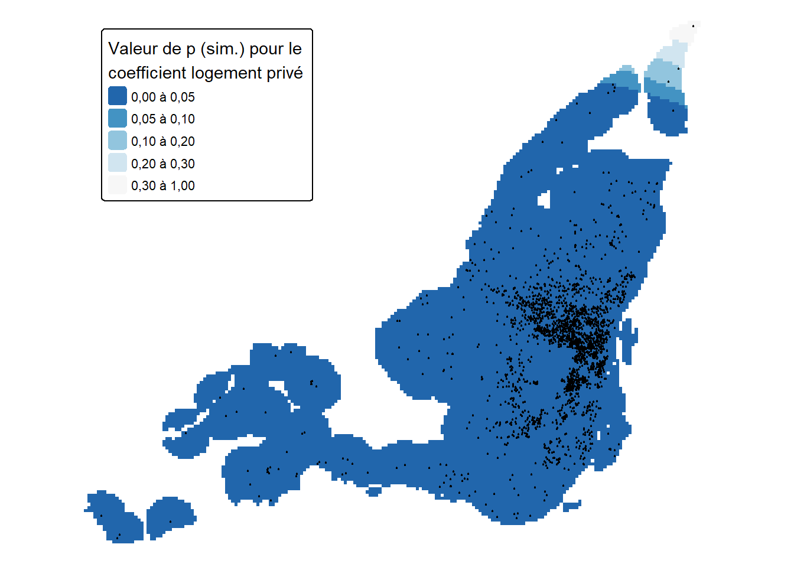
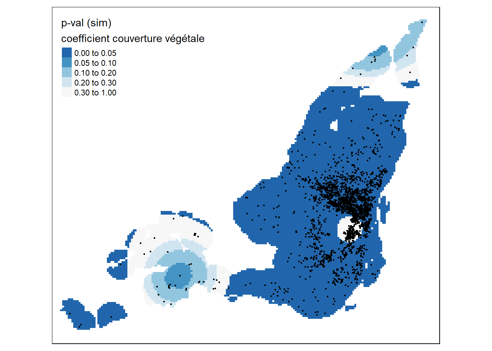
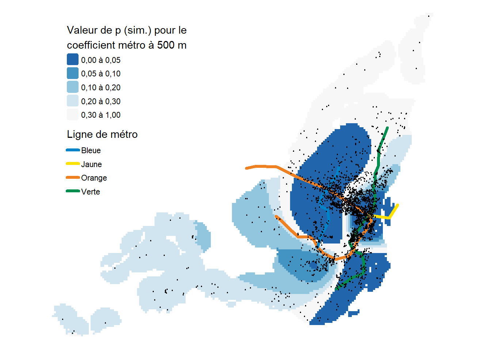
Les cartes des figures ?fig-ht2sim et ?fig-ht2ln illustrent la distribution spatiale des valeurs de p de nos splines faisant varier localement les coefficients. Il est important d’utiliser les résultats de ces cartes pour pouvoir déterminer si les effets observés à la ?fig-htgam1 sont significativement différents de zéro.
10.2 Modèles linéaires généralisés à effets mixtes (GLMM)
Dans cette section, nous expliquons comment un effet aléatoire peut être utilisé pour permettre à un coefficient de varier spatialement dans un modèle GLMM. Si nécessaire, vous pouvez vous rafraichir la mémoire sur ce que sont les GLMM et les effet aléatoire dans le chapitre sur les GLMM du livre Méthodes quantitatives en sciences sociales : un grand bol d’R (Apparicio et Gelb 2022). Vous pouvez aussi vous référer à la section Section 2.3 de ce livre pour une explication sur comment un effet aléatoire peut être utilisé pour modéliser un effet spatial.
10.2.1 Effets aléatoire et coefficients variant spatialement
Pour rappel, un effet aléatoire dans un modèle est un terme dont nous supposons que les valeurs proviennent d’une distribution normale. La forme la plus commune d’un effet aléatoire est notamment l’intercept aléatoire permettant de contrôler pour des effets de groupes. En effet, il est important de contrôler le fait que deux observations provenant d’un même groupe ou plus de chances de ressembler, d’être corrélées, que deux observations provenant de groupes différents. Dans la section Section 2.3, nous avions montré qu’il est possible d’utiliser une structure de covariance spatiale (CAR, Matern, Exponentielle, etc.) pour un effet aléatoire. Cette structure permet ainsi de tenir compte du fait que deux observations proches spatialement ont plus de chance de se ressembler, d’être corrélées, que deux observations lointaines.
Nous avions notamment formulé le GLMM suivant:
\[ \begin{aligned} &y \sim Normal(\mu, \sigma) \\ &\mu = \beta_0 + \beta X + \nu\\ &\nu \sim N(0,\Omega) \end{aligned} \tag{10.3}\]
Dans le modèle décrit à l’équation équation 10.3, \(\nu\) correspond à un effet aléatoire et \(\Omega\) une matrice de covariance spatiale. \(\nu\) peut être vu comme une série de bonus et de malus spatialement autocorrélés accordés à l’intercept du modèle. Il est tout à fait possible d’étendre cette spécification pour ne pas faire varier que l’intercept mais aussi certains coefficients du modèle.
\[ \begin{aligned} &y \sim Normal(\mu, \sigma) \\ &\mu = \beta_0 + \sum^k_{i=1} \beta_i X_i + \sum^l_{ j=1} [(\beta_j + \eta_j)X_j] + \nu \\ &\nu \sim N(0,\Omega) \\ &\eta_j \sim N(0,\Phi_j) \end{aligned} \tag{10.4}\]
Avec:
- \(k\), les variables dont les effets sont fixes et ne varient pas dans l’espace,
- \(l\), les variables dont les effets varient dans l’espace
- \(\eta_j\) un effet aléatoire provenant d’une distribution normale centrée sur 0 et suivant une structure d’autocorrélation spatiale \(\Phi_j\). Puisque cet effet est centré sur 0, \(\beta_j\) représente l’effet moyen attendu du coefficient sur l’ensemble du territoire. Les valeurs de \(\eta_j\) correspondent donc à des bonus ou malus locaux qui viennent renforcer ou réduire l’effet de \(\beta_j\).
Les effets aléatoires que nous avions observé dans la section Section 2.3 (car, matern, exponentiel, sphérique, etc.) peuvent être utilisés pour paramétrer \(\Omega\) et \(\Phi\) en fonction de la relation spatiale à modéliser (distance ou contiguité) et selon leur adéquation aux données.
Notez que puisque nos effets aléatoires spatiaux proviennent de distributions normales multivariées, ils sont souvent appelés des processus gaussiens.
Pour rappel, il est toujours préférable d’utiliser un modèle moins complexe pour décrire un phénomène (principe de parcimonie). Il est donc essentiel de s’assurer que l’ajout de coefficients variant spatialement se justifie dans un modèle. Pour cela, il est possible d’utiliser le AIC ou d’autres critères similaires (BIC, DIC, REML). Il est aussi important de vérifier si la variance estimée de ces effets aléatoires est significativement différente de zéro. En effet, si ce n’est pas le cas, cela signifie que l’effet aléatoire n’a essentiellement aucune variance et donc aucun impact dans le modèle.
Variance d’un effet aléatoire et valeurs estimées
ce n’est pas parce que la variance d’un effet aléatoire est différente de zéro que les valeurs estimées de cet effet aléatoire seront significativement différentes de zéro.
Dans le cas des GLMM avec coefficients variant spatialement, nous formulons l’hypothèse que la variation locale d’un coefficient provient d’un processus gaussien spatial. La variance de ce processus gaussien peut être significativement différente de zéro, mais les réalisations de ce processus peuvent ne pas être significativement différentes de zéro. En d’autres termes, les bonus et malus locaux des coefficients peuvent être tellement faibles et incertains que leur contribution finale au modèle est anecdotique, et ce, même si la variance de l’effet aléatoire est significative. Il est donc important lorsque l’on cartographie les coefficients variant spatialement de bien indiquer où ceux-ci sont significativement différents de zéro. Il s’agit exactement du même enjeu qu’avec les splines spatiales présentées plus tôt.
Prenons un exemple avec un modèle fictif. Admettons que pour ce modèle, nous avons estimé un coefficient fixe \(\beta_j = 0.5\) et ce coefficient est significatif au seuil \(p < 0.01\). Ce coefficient représente l’effet moyen de la variable \(j\) quand nous ne savons pas où nous nous trouvons sur le territoire, soit l’effet moyen sur l’ensemble du territoire. Admettons aussi que nous avons estimé un effet aléatoire suivant un processus gaussien spatial dont la variance est de \(\sigma = 0.1\) et que cette variance est significativement différente de zéro. Pour un emplacement \(i\), notre modèle a déterminé que la valeur de l’effet aléatoire est de \(\eta_j = 0.05\), mais que cet effet n’est pas significativement différent de zéro \(p = 0.15\). Le coefficient au point \(i\) peut être calculé par la simple somme des deux effets: \(\beta_{ji} = \beta_j + \eta_j\), mais il ne sera pas statistiquement différent de \(\beta_j\) puisque \(\eta_j\) n’est pas lui même significativement différent de zéro.
Il serait aussi possible d’avoir une situation différente dans laquelle \(\beta_j\) n’est pas significatif: \(\beta_j = 0.05\) avec \(p = 0.35\). Dans cette situation, l’effet général de \(\beta_j\) est proche de zéro sur l’ensemble du territoire. Admettons maintenant que \(\eta_j = 0.15\) avec \(p < 0.01\). Cela signifierait que pour le point du territoire \(i\), l’effet de la variable \(j\) est \(x_j \times(\beta_j + \eta_j)\). Cependant, puisque l’effet général \(\beta_j\) n’est pas différent de zéro, alors il est possible de dire que l’effet local est uniquement dû à \(\eta_j\).
10.2.2 Mise en oeuvre dans R
Pour illustrer comment des effets aléatoires peuvent être utilisés pour faire varier spatialement les coefficients d’un modèle, nous allons reprendre l’exemple des décès attribué à la Covid19 aux États-Unis. Nous essayerons d’améliorer notre dernier modèle de la section Section 2.3.2.
Il existe actuellement assez peu de packages en R pour ajuster ce type de modèle. spBayes et INLA sont très flexibles, mais utilisent des méthodes d’ajustement bayésiennes que nous ne couvront pas dans ce livre. Pour les méthodes fréquentistes, les choix sont assez limités avec varycoef et sdmTMB. Le premier ne permet pas d’ajuster des GLM et se limite dont à des modèles linéaires classique (family = gaussian). Nous allons donc montrer ici comment utiliser sdmTMB.
Puisque l’estimation d’effets aléatoires spatiaux est relativement coûteuse en temps de calcul, sdmTMB utilise une stratégie relativement récente (Stochastic Partial Differential Equation) consistant à approximer ces effets aléatoires Lindgren, Rue et Lindström (2011). L’idée générale est de découper la zone d’étude en un ensemble de triangles (mesh) dont les extrémités sont appelés des noeuds (oui, comme pour une spline). L’effet aléatoire spatial est estimé pour chaque noeud, et les valeurs entre les noeuds sont ensuite calculées par interpolation bilinéaire. Ces effets aléatoires suivent des processus gaussiens discrets (Markov random field) avec des matrices de covariance suivant une structure Matérn. Cette méthode d’estimation est particulièrement efficace car elle simplifie grandement le calcul de l’effet aléatoire. Le processus gaussien continu (gaussian field) est approximé par un processu gaussien discret (gaussian markov random field). Cette formulation permet de limiter la dépendance spatiale continue à une dépendance spatiale de voisinage, ce qui réduit considérablement la taille des matrices à manipuler pour estimer les effets aléatoires.
Pour faciliter l’ajustement du modèle avec sdmTMB, il est nécessaire que les différentes variables continues soient centrées et réduites. Nous allons également transformer les coordonnées géographiques en dizaines de kilomètres. Il est également nécessaire de créer une mesh. Cette dernière doit être suffisamment précise pour résumer efficacement les relations spatiales étudiées. Cependant, plus la mesh est fine, plus le temps de calcul est important car plus le nombre d’effets aléatoires à estimer est grand.
library(sf, quietly = TRUE)
library(ggplot2, quietly = TRUE)
library(tmap, quietly = TRUE)
library(dplyr, quietly = TRUE)
library(spdep, quietly = TRUE)
library(DHARMa, quietly = TRUE)
library(sdmTMB, quietly = TRUE)
# Chargement des données
covid_data <- readRDS('data/chap02/covid_usa.rds')
# recodage des valeurs négatives pour le nombre de décès
covid_data$deaths_3 <- ifelse(covid_data$deaths_3 < 0,
0,
covid_data$deaths_3
)
# conservation uniquement des contés unique
covid_data <- covid_data %>%
group_by(FIPS) %>%
slice_head(n = 1)
data_mode1 <- na.omit(covid_data)
# récupération en mise à l'échelle des coordonées spatiales
XY <- st_coordinates(st_centroid(data_mode1))
data_mode1$X <- XY[,1] / 10000
data_mode1$Y <- XY[,2] / 10000
# standardisation des différentes variables quantitatives
vars <- c('income', 'income', 'per_black', 'per_hispanic', 'per_atleast_hs',
'per_nursing', 'X65plus','political_leaning', 'strict_p3',
'mask_usage_p3', 'google_p3', 'dist_to_airport', 'density')
for(var in vars){
data_mode1[[paste0('sr_', var)]] <- scale(data_mode1[[var]], center = T, scale = T)
}
# mise en log de la population pour l'utiliser comme offset
data_mode1$population_log <- log(data_mode1$population)
# réalisation de la mesh, le paramètre cutoff contrôler la longueur
# minimum des cotés des triangles
mesh1 <- make_mesh(st_drop_geometry(data_mode1), c('X', 'Y'), cutoff = 20)
mesh2 <- make_mesh(st_drop_geometry(data_mode1), c('X', 'Y'), cutoff = 1)
mesh3 <- make_mesh(st_drop_geometry(data_mode1), c('X', 'Y'), cutoff = 5)
plot(mesh1)
plot(mesh2)
plot(mesh3)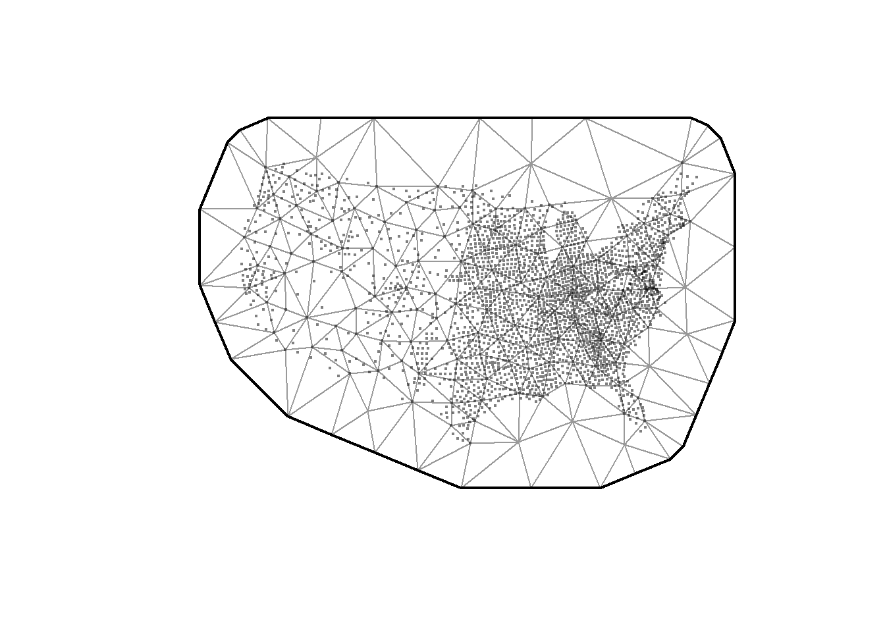
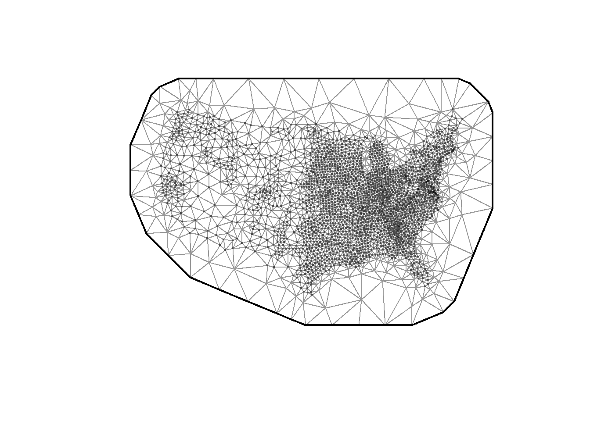
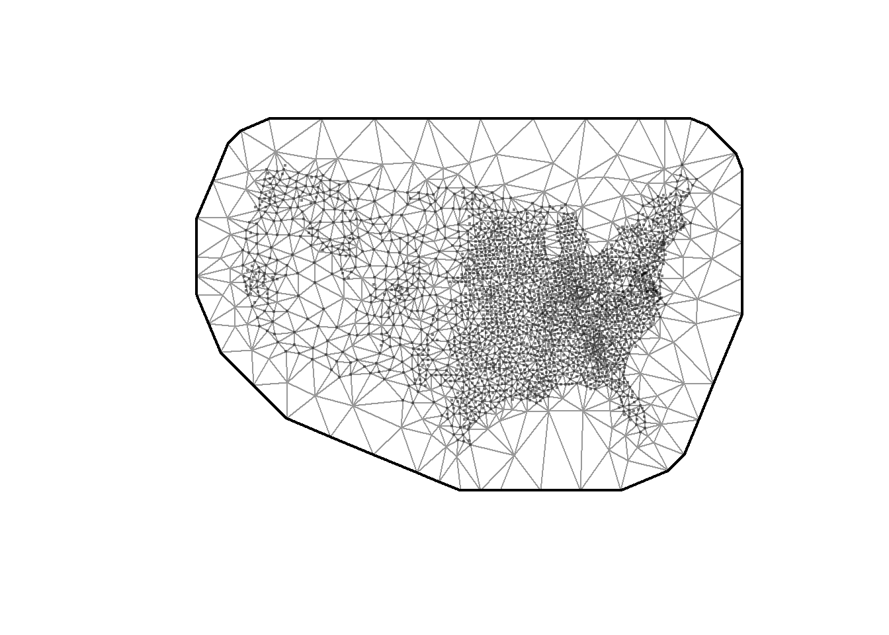
Maintenant que nous disposons de notre mesh et que nous avons appliquer nos transformations à nos données, nous allons ajuster un modèle de référence dans lequel aucun coefficient ne varie spatialement. Nous avons seulement un intercept spatial, tel que nous l’avions également dans la section Section 2.3.2.
# calcul d'un modèle nul qui sera utilisé pour calculer les différents
# pseudos R2
model0 <- sdmTMB(
data = st_drop_geometry(data_mode1),
formula = deaths_3 ~ 1,
offset = 'population_log',
family = nbinom2 (link = "log"),
spatial = FALSE
)
# définition d'une fonction pour calculer les pseudo R2
rsqs <- function(loglike.full,
full.deviance,
loglike.null,
null.deviance,
nb.params, n){
explained_dev <- 1-(full.deviance / null.deviance)
K <- nb.params
r2_faddenadj <- 1- (loglike.full - K) / loglike.null
Lm <- loglike.full
Ln <- loglike.null
Rcs <- 1 - exp((-2/n) * (Lm-Ln))
Rn <- Rcs / (1-exp(2*Ln/n))
return(
list("deviance expliquee" = explained_dev,
"MacFadden ajuste" = r2_faddenadj,
"Cox and Snell" = Rcs,
"Nagelkerke" = Rn
)
)
}
# calcul du premier modèle avec uniquement un intercept variant spatialement
model1 <- sdmTMB(
data = st_drop_geometry(data_mode1),
formula = deaths_3 ~
sr_income + sr_per_black + sr_per_hispanic + sr_per_atleast_hs +
sr_per_nursing + sr_X65plus +
sr_political_leaning + sr_strict_p3 +
sr_mask_usage_p3 + sr_google_p3 + sr_dist_to_airport + sr_density,
offset = 'population_log',
mesh = mesh3,
family = nbinom2 (link = "log"),
spatial = TRUE
)
r2_model1 <- rsqs(
loglike.full = as.numeric(logLik(model1)),
loglike.null = as.numeric(logLik(model0)),
full.deviance = deviance(model1),
null.deviance = deviance(model0),
nb.params = cAIC(model1, what = 'edf')[[1]],
n = nrow(data_mode1)
)
# analyse des résidus simulés du modèle
simulations <- simulate(model1, nsim = 500, type = "mle-mvn")
resids <- dharma_residuals(simulations, model1, return_DHARMa = TRUE)
plot(resids)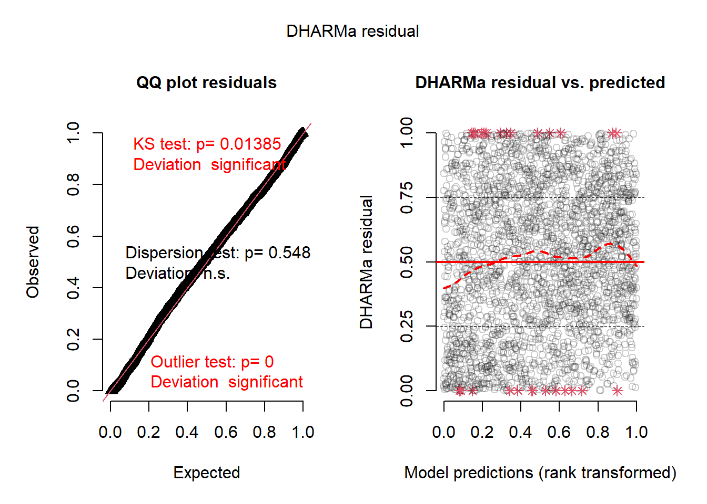
La figure figure 10.13 indique que les résidus simulés du modèle sont relativement proches d’une distribution uniforme. Il existerait cependant quelques valeurs extrêmes significtives.
print(r2_model1)$`deviance expliquee`
[1] 0.1104837
$`MacFadden ajuste`
[1] 0.05679213
$`Cox and Snell`
[1] 0.5529029
$Nagelkerke
[1] 0.5529539Les pseudos \(R^2\) du modèle sont relativement faibles, indiquant qu’une partie non négligeable du phénomène reste inexpliqué par le modèle.
df_pred <- data.frame(
y = data_mode1$deaths_3 / data_mode1$population,
pred1 = predict(model1, type = 'response')$est
)
ggplot(df_pred) +
geom_point(aes(x = y, y = pred1)) +
geom_abline(slope = 1, intercept = 0, color = 'red', linetype = 'dashed') +
labs(x = 'taux de décès réel',
y = 'taux de décès prédit'
) +
theme_bw()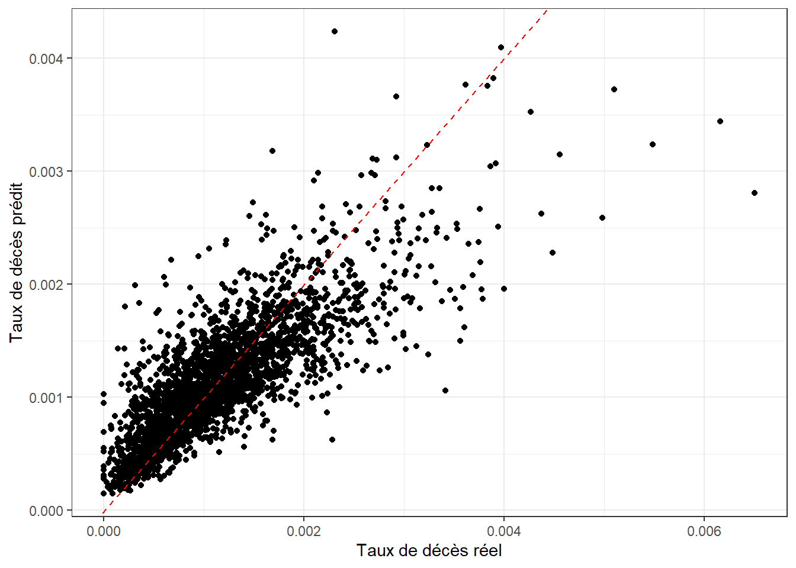
La figure figure 10.14 montre que le modèle parvient tout de même à effectuer des prédictions qui se rapprochent des valeurs réelles.
Nous considérons ici plusieurs coefficients pouvant avoir un effet variant spatialement. Par exemple, l’intensité des inégalités socio-économiques varie d’un État à l’autre, ce qui pourrait se traduire par des effets plus ou moins prononcés des variables socio-économiques. Les variables sur l’application des mesures sanitaires ou sur la mobilité sont de moins bonnes qualité, nous éviterons donc de les faire varier spatialement pour éviter des risques de sur-interprétation. La distance à l’aéroport le plus proche pourrait aussi avoir un effet variant spatilament car tous les aéroports n’ont probablement pas eu la même contribution lors de la pandémie.
Nous allons donc commencer par un modèle ajoutant ces différents effets pour ensuite retirer ceux qui ne sont pas significatifs.
model2 <- sdmTMB(
data = st_drop_geometry(data_mode1),
formula = deaths_3 ~
sr_income + sr_per_black + sr_per_hispanic + sr_per_atleast_hs +
sr_per_nursing + sr_X65plus +
sr_political_leaning + sr_strict_p3 +
sr_mask_usage_p3 + sr_google_p3 + sr_dist_to_airport + sr_density,
offset = 'population_log',
mesh = mesh3, # can be omitted for a non-spatial model
spatial = TRUE,
spatial_varying = ~ 1 + sr_X65plus + sr_per_atleast_hs +
sr_income + sr_per_black + sr_per_hispanic +
sr_per_nursing + sr_dist_to_airport,
family = nbinom2 (link = "log")
)| term | estimate | std.error | conf.low | conf.high |
|---|---|---|---|---|
| range | 62.384 | 9.107 | 46.861 | 83.049 |
| phi | 11.455 | 0.601 | 10.336 | 12.695 |
| sigma_O | 0.419 | 0.043 | 0.342 | 0.513 |
| sigma_Z | 0.111 | 0.019 | 0.080 | 0.155 |
| sigma_Z | 0.087 | 0.026 | 0.049 | 0.155 |
| sigma_Z | 0.082 | 0.024 | 0.047 | 0.145 |
| sigma_Z | 0.000 | 0.025 | 0.000 | Inf |
| sigma_Z | 0.000 | 0.024 | 0.000 | Inf |
| sigma_Z | 0.105 | 0.028 | 0.063 | 0.176 |
| sigma_Z | 0.000 | 0.066 | 0.000 | Inf |
Le tableau précédent indique clairement que trois de nos sept coefficients spatiaux n’ont pas de variation spatiale significative (conf.low < 0.01). Nous allons donc réajuster le modèle en retirant ces trois termes (sr_dist_to_airport, sr_per_hispanic, sr_per_black).
model2 <- sdmTMB(
data = st_drop_geometry(data_mode1),
formula = deaths_3 ~
sr_income + sr_per_black + sr_per_hispanic + sr_per_atleast_hs +
sr_per_nursing + sr_X65plus +
sr_political_leaning + sr_strict_p3 +
sr_mask_usage_p3 + sr_google_p3 + sr_dist_to_airport + sr_density,
offset = 'population_log',
mesh = mesh3, # can be omitted for a non-spatial model
spatial = TRUE,
spatial_varying = ~ 1 + sr_X65plus + sr_per_atleast_hs +
sr_income + sr_per_nursing ,
family = nbinom2 (link = "log")
)# analyse des résidus simulés du modèle
simulations <- simulate(model2, nsim = 500, type = "mle-mvn")
resids <- dharma_residuals(simulations, model2, return_DHARMa = TRUE)
plot(resids)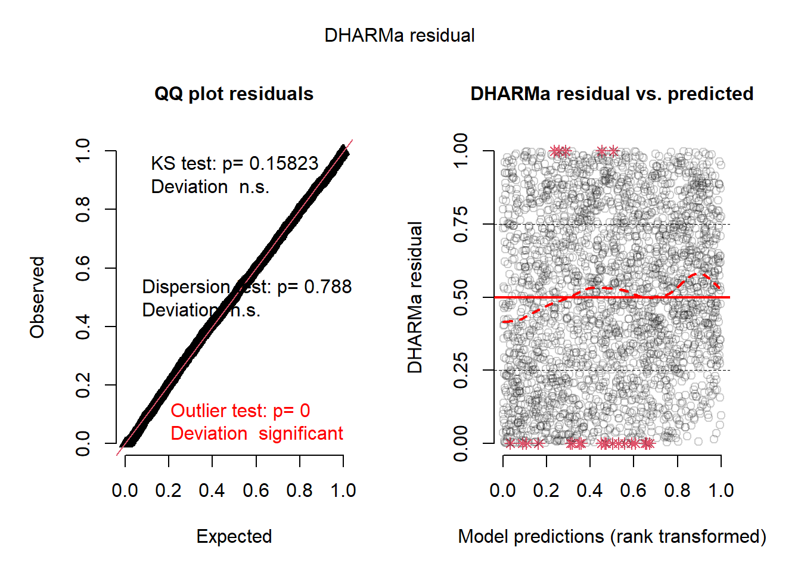
La nouvelle version du modèle incluant nos coefficients variant spatialement obtient également des bons résidus simulés (figure figure 10.15)
r2_model2 <- rsqs(
loglike.full = as.numeric(logLik(model2)),
loglike.null = as.numeric(logLik(model0)),
full.deviance = deviance(model2),
null.deviance = deviance(model0),
nb.params = cAIC(model2, what = 'edf')[[1]],
n = nrow(data_mode1)
)
tab_r2 <- data.frame(
r2s = names(r2_model2),
model1 = unlist(r2_model1),
model2 = unlist(r2_model2)
)
knitr::kable(tab_r2, digits = 3,
row.names = FALSE,
col.names = c('R2', 'modèle 1', 'modèle 2'))| R2 | modèle 1 | modèle 2 |
|---|---|---|
| deviance expliquee | 0.110 | 0.134 |
| MacFadden ajuste | 0.057 | 0.067 |
| Cox and Snell | 0.553 | 0.564 |
| Nagelkerke | 0.553 | 0.565 |
En termes de \(R^2\), le second modèle n’offre qu’une amélioration très marginale du premier modèle.
Le AIC conditionnel du second modèle est plus petit que celui du premier modèle, indiquant un meilleur ajustement. Pour le rappel, le AIC conditionnel est une version du AIC plus adaptée pour comparer des modèles à effets mixtes si leurs effets aléatoires sont différents. Il a notamment été présenté dans la section Section 2.3.2.
Nous pouvons à présent analyser les effets fixes du modèle. Pour rappel, nos variables indépendantes ont été centrées réduites. Nous devons donc diviser les coefficients par les écarts types originaux de nos variables indépendantes pour permettre une interprétation dans l’échelle originale des données. Nous devons également les mettre en exponentiel afin de pouvoir les interprêter (puisque la fonction de lien est la fonction log).
# extraction des coeffients et de leur interval de confiance
tab_fixe <- tidy(model2, effects = 'fixed', conf.int = TRUE)
# récupération des écarts types
vars <- c('income', 'income', 'per_black', 'per_hispanic', 'per_atleast_hs',
'per_nursing', 'X65plus','political_leaning', 'strict_p3',
'mask_usage_p3', 'google_p3', 'dist_to_airport', 'density')
sd_values <- sapply(vars, function(x){
sd(data_mode1[[x]])
})
sd_df <- data.frame(
sd = c(1,sd_values),
var = c('(Intercept)', paste0('sr_',vars))
)
# application des écarts types aux effets estimés
ids <- match(tab_fixe$term, sd_df$var)
tab_fixe$estimate_std <- tab_fixe$estimate
for(col in c("estimate", "conf.low", "conf.high")){
tab_fixe[[col]] <- exp(tab_fixe[[col]] / sd_df$sd[ids])
}
tab_fixe$std.error <- NULL
knitr::kable(tab_fixe, digits = 3,
col.names = c('terme','coefficient', 'CI 2.5%', 'CI 97.5%', 'coefficient standardisé'))| terme | coefficient | CI 2.5% | CI 97.5% | coefficient standardisé |
|---|---|---|---|---|
| (Intercept) | 0.001 | 0.001 | 0.001 | -6.893 |
| sr_income | 0.990 | 0.987 | 0.994 | -0.132 |
| sr_per_black | 1.005 | 1.002 | 1.008 | 0.071 |
| sr_per_hispanic | 1.003 | 0.999 | 1.007 | 0.042 |
| sr_per_atleast_hs | 0.988 | 0.977 | 0.999 | -0.074 |
| sr_per_nursing | 1.823 | 1.516 | 2.191 | 0.203 |
| sr_X65plus | 0.998 | 0.986 | 1.010 | -0.008 |
| sr_political_leaning | 1.515 | 1.337 | 1.716 | 0.129 |
| sr_strict_p3 | 0.992 | 0.988 | 0.996 | -0.078 |
| sr_mask_usage_p3 | 0.984 | 0.952 | 1.016 | -0.030 |
| sr_google_p3 | 1.008 | 1.005 | 1.011 | 0.057 |
| sr_dist_to_airport | 0.999 | 0.999 | 1.000 | -0.026 |
| sr_density | 1.000 | 1.000 | 1.000 | 0.000 |
Finalement, nous pouvons extraire les effets aléatoires du modèle et plus spécifiquement nos coefficients variant spatialement. Pour cela, nous devons additionner le coefficient général et sa variation spatiale. Puisque nous avons centré et réduit nos variables, nous devons diviser les coefficients obtenu par l’écart type original de ces variables pour pouvoir les interprêter dans leur échelle originale. Efi, il nous reste à appliquer la fonction exponentielle pour obtenir l’effet local multiplicatif des variables indépendantes sur le taux de décès. La fonction predict du package sdmTMB permet d’extraire à la fois les valeurs prédites mais aussi les coefficients spatiaux du modèle.
library(matrixStats)
set.seed(888)
# extraction des prédictions
preds <- predict(model2, type = 'link')
# récupération de l'intercept spatial
data_mode1$rand_intercept <- exp(preds$omega_s)
# extraction de 999 simulations des valeurs locales des coefficients spatiaux
preds2 <- predict(model2, type = 'link', nsim = 999, sims_var = 'zeta_s')
# extraction de 999 simulations des valeurs locales de l'intercept spatial
preds3 <- predict(model2, type = 'link', nsim = 999, sims_var = 'omega_s')
# pour chacun des coefficients spatiaux, déterminer si la variation spatiale est
# significativement différente de 0 au seuil 0.05
pvals <- sapply(preds2, function(tab){
qtl <- rowQuantiles(tab, probs = c(0.025, 0.975))
test <- ((qtl[,1] < 0) & (qtl[,2] < 0)) | ((qtl[,1] > 0) & (qtl[,2] > 0))
return(test)
})
pvals <- data.frame(pvals)
# idem avec l'intercept spatial
qtl <- rowQuantiles(preds3, probs = c(0.025, 0.975))
test <- ((qtl[,1] < 0) & (qtl[,2] < 0)) | ((qtl[,1] > 0) & (qtl[,2] > 0))
data_mode1$rand_intercept_sign <- test
# récupération des coefficients spatiaux pour nos différentes variables
# avec un effet spatial
sp_vars <- c('sr_per_atleast_hs', 'sr_X65plus', 'sr_income', 'sr_per_nursing')
for(var in sp_vars){
# récupération du coefficient fixe de base
base_coeff <- tab_fixe$estimate_std[tab_fixe$term == var]
# récupération des variations spatiales du coefficient
sp_coeff <- preds[[paste0('zeta_s_', var)]]
# addition et conversion vers l'échelle originale des données
loc_coeff <- (base_coeff + sp_coeff) / sd_df$sd[sd_df$var == var]
# application de la fonction exponentielle pour avoir l'effet multiplicatif
# sur le taux de décès
exp_loc_coeff <- exp(loc_coeff)
data_mode1[[paste0('sp_coeff_', var)]] <- exp_loc_coeff
data_mode1[[paste0('sp_sign_', var)]] <- pvals[[var]]
}
legende_parametres <- list(text.separator = "à",
decimal.mark = ",",
digits = 2)
tm_shape(data_mode1) +
tm_fill('sp_coeff_sr_per_atleast_hs',
n = 7,
style = 'fisher', midpoint = 1,
palette = 'Spectral', legend.is.portrait = FALSE,
legend.format = legende_parametres,
title = "coeff. diplôme d'étude secondaire") +
tm_shape(subset(data_mode1,!data_mode1$sp_sign_sr_per_atleast_hs)) +
tm_fill('grey',title = 'non sign.') +
tm_add_legend(type = 'fill', labels = 'non. sign', col = 'grey') +
tm_layout(frame=FALSE, legend.outside = TRUE,
legend.outside.position = 'bottom')
tm_shape(data_mode1) +
tm_fill('sp_coeff_sr_income',
n = 7,
style = 'fisher', midpoint = 1,
palette = 'Spectral', legend.is.portrait = FALSE,
legend.format = legende_parametres,
title = "coeff. revenu") +
tm_shape(subset(data_mode1,!data_mode1$sp_sign_sr_income)) +
tm_fill('grey',title = 'non sign.') +
tm_add_legend(type = 'fill', labels = 'non. sign', col = 'grey') +
tm_layout(frame=FALSE, legend.outside = TRUE,
legend.outside.position = 'bottom')
tm_shape(data_mode1) +
tm_fill('sp_coeff_sr_per_nursing',
n = 7,
style = 'fisher', midpoint = 1,
palette = 'Spectral', legend.is.portrait = FALSE,
legend.format = legende_parametres,
title = "coeff. population en soin de longue durée") +
tm_shape(subset(data_mode1,!data_mode1$sp_sign_sr_per_nursing)) +
tm_fill('grey',title = 'non sign.') +
tm_add_legend(type = 'fill', labels = 'non. sign', col = 'grey') +
tm_layout(frame=FALSE, legend.outside = TRUE,
legend.outside.position = 'bottom')
tm_shape(data_mode1) +
tm_fill('sp_coeff_sr_X65plus',
n = 7,
style = 'fisher', midpoint = 1,
palette = 'Spectral', legend.is.portrait = FALSE,
legend.format = legende_parametres,
title = "coeff. 65 ans et plus") +
tm_shape(subset(data_mode1,!data_mode1$sp_sign_sr_X65plus)) +
tm_fill('grey',title = 'non sign.') +
tm_add_legend(type = 'fill', labels = 'non. sign', col = 'grey') +
tm_layout(frame=FALSE, legend.outside = TRUE,
legend.outside.position = 'bottom')
tm_shape(data_mode1) +
tm_fill('rand_intercept',
n = 7,
style = 'fisher', midpoint = 1,
palette = 'Spectral', legend.is.portrait = FALSE,
legend.format = legende_parametres,
title = "intercept aléatoire spatial") +
tm_shape(subset(data_mode1,!data_mode1$rand_intercept_sign)) +
tm_fill('grey',title = 'non sign.') +
tm_add_legend(type = 'fill', labels = 'non. sign', col = 'grey') +
tm_layout(frame=FALSE, legend.outside = TRUE,
legend.outside.position = 'bottom')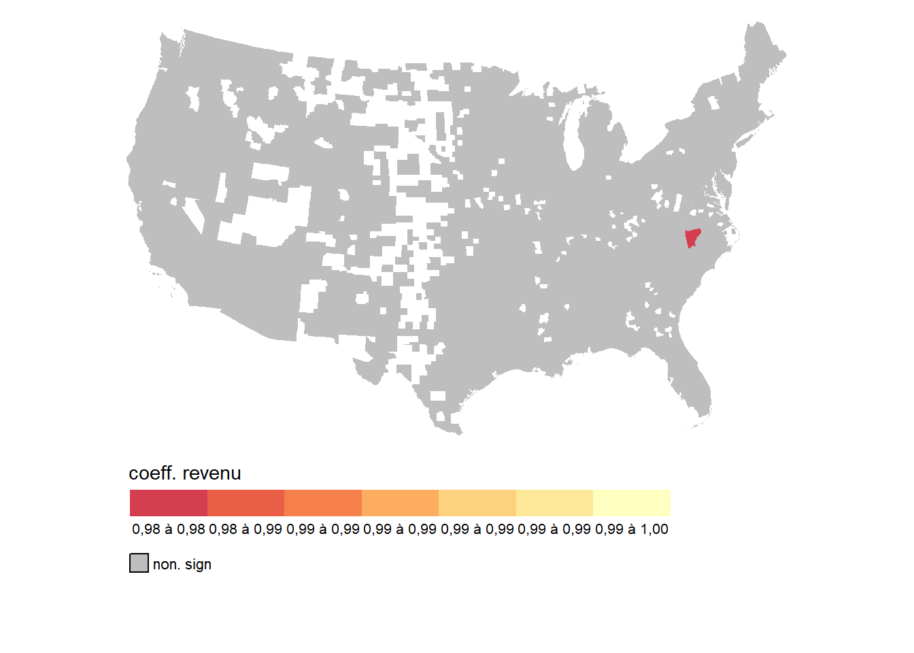
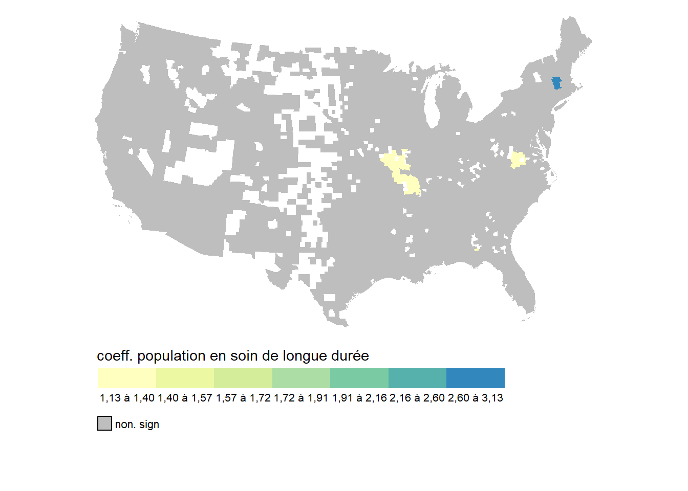
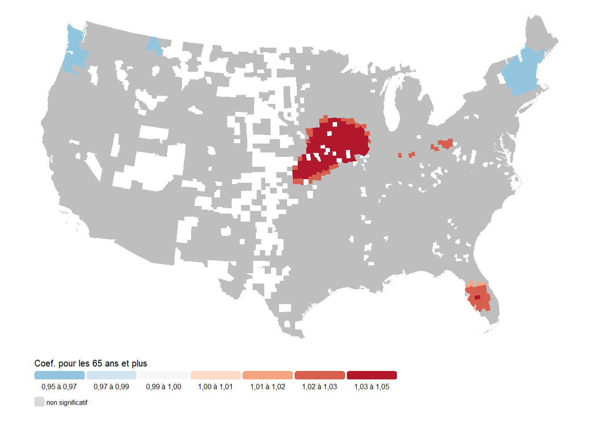
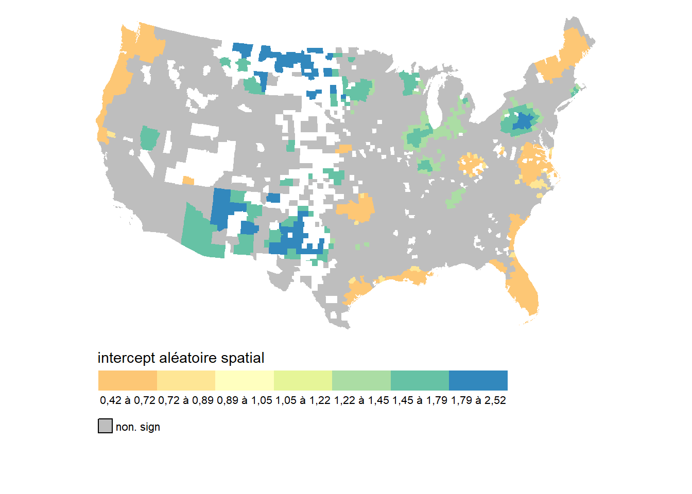
Attention, dans les cartes ci-dessus, les Comtés grisés correspondent à des Comtés dans lesquels le coefficient cartographié n’a pas significativement varié spatialement. Dans ces cas ci, l’effet qui s’applique dans le Comté est tout simplement l’effet fixe général pour ce coefficient.
Premièrement, nous pouvons remarquer que les variations spatiales des coefficients du niveau d’éducation, et du revenu sont toutes les deux beaucoup trop faibles pour avoir un impact réellement significatif. Il serait donc plus prudent d’estimer que ces deux coefficients ne varient pas spatialement.
Nous notons pour le coefficient associé à la population en soin de longue durée trois zones semblent caractérisés par des variations locales supérieure à zéro, soit une partie de l’État du Missouri, le Nord de la Virginie en frontière avec lÉtat de Washington, et enfin quelques Comtés de l’État de New York. Cet effet suggère que la mortalité associée à cette population a été plus importante dans ces zones. Avec des coefficients variant entre 1,13 et 1,40 dans les deux premières zones et entre 2,5 et plus de 3 pour la troisième.
Le pourcentage de la population de 65 ans et plus a eu un effet variant un peu plus spatialement avec deux zones dans lesquels elle est associée avec une réduction du taux de décès (États de New York, New Hampshire, Vermont, Massachussets, Connecticut et Rhode Island, et l’Ouest des États de Washington et de l’Oregon), et trois zones dans lesquelles elle est associée avec une augmentation du taux de décès (États de l’Iowa, Nebraska et Kansas ; Oiho ; Floride).
Finalement, l’intercept spatial montre un impact significatif dans un plus grand nombre de Comtés. L’Ouest des États-Unis tend à avoir des taux de décès plus élevés (jusqu’à 2,5 fois) toute chose étant égale. Seul le Nord Ouest avec les États de Washington, de L’Idaho, de l’Oregon et le Nord de la Californie sont au contraire caractérisés par des taux plus faible (jusqu’à 50%). Dans l’est, l’État de New York et la Pennsylvanie sont aussi caractérisés par des taux plus élevés, alors que la Viriginie et la Carolyne du Nord ont tendance à avoir des taux plus faibles.
10.3 Quiz de révision
10.4 Exercices de révision
Exercice 1. À compléter
Complétez le code ci-dessous.
Correction à la section 11.10.1.
Exercice 2. À compléter
Complétez le code ci-dessous.
Correction à la section 11.10.2.
Exercice 3. À compléter
Complétez le code ci-dessous.
Correction à la section 11.10.3.